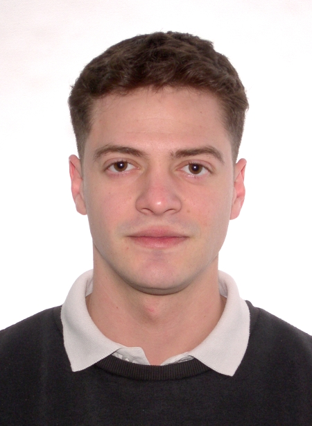

Sobre mi

Soy Lucas Andrés Griego, estudiante de Desarrollo de Aplicaciones Multiplataforma (DAM) y creador de STURMPROJEKT. Me apasionan la informática, la programación y la administración de sistemas Linux. Disfruto aprendiendo mediante la práctica, experimentando con servidores, contenedores Docker, desarrollo web y nuevas tecnologías. Compagino mis estudios con proyectos personales y trabajos para clientes, buscando mejorar mis conocimientos y adquirir experiencia real en el sector tecnológico.
Mi web
STURMPROJEKT es mi proyecto personal y profesional, nacido de mi interés por Linux, los servidores y el aprovechamiento de los recursos tecnológicos. Lo que comenzó como un laboratorio de experimentación con infraestructura auto hospedada ha evolucionado hacia un proyecto dedicado al desarrollo web, hosting, gestión de dominios, despliegue de aplicaciones y mantenimiento de servidores. En mi página puedes conocer los servicios que ofrezco, explorar mi infraestructura y descubrir algunos de los trabajos que he realizado.
Mis proyectos
Me gusta desarrollar proyectos que me permitan aprender y solucionar problemas reales. Entre ellos destaca STURMPROJEKT, donde trabajo con infraestructura, alojamiento web y administración de sistemas. También experimento con servidores propios y comparto parte de mi aprendizaje y código en GitHub.
STURMPROJEKT - Infraestructura propia
He desarrollado mi propia infraestructura de servidores Linux, utilizando Docker, Nginx Proxy Manager y Cloudflare para alojar y gestionar diferentes servicios. Este proyecto me permite experimentar con redes, seguridad y administración de sistemas.
SUMEX Gráfica - Desarrollo web
Uno de mis primeros trabajos para clientes fue el desarrollo y despliegue de la página web de SUMEX Gráfica. Me encargué de la infraestructura, configuración del dominio, DNS, certificados SSL y publicación de la web mediante Docker y Cloudflare.
Monitorización de servidores Linux
He trabajado en la monitorización de servidores Linux y contenedores Docker, utilizando herramientas de terminal como btop para supervisar el consumo de recursos, procesos y rendimiento de los sistemas.
Servidor Minecraft Bedrock
He desplegado un servidor dedicado de Minecraft Bedrock sobre Linux, trabajando con Docker, configuración de red y administración remota. Este proyecto me ha permitido practicar el alojamiento de servicios multijugador.
Servidor dedicado de Valheim
Otro de mis proyectos ha sido el despliegue de un servidor dedicado de Valheim en mi propia infraestructura. He trabajado con la configuración del entorno Linux, la gestión de recursos y la conectividad necesaria para alojar partidas multijugador.